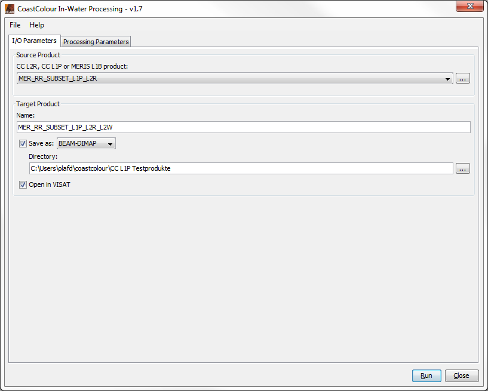
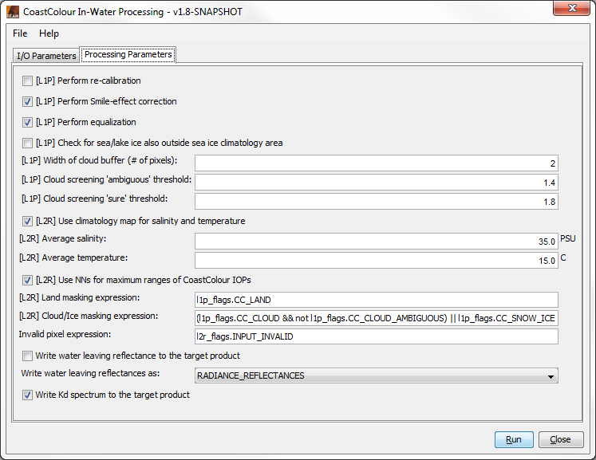
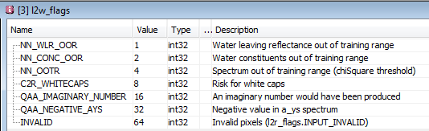
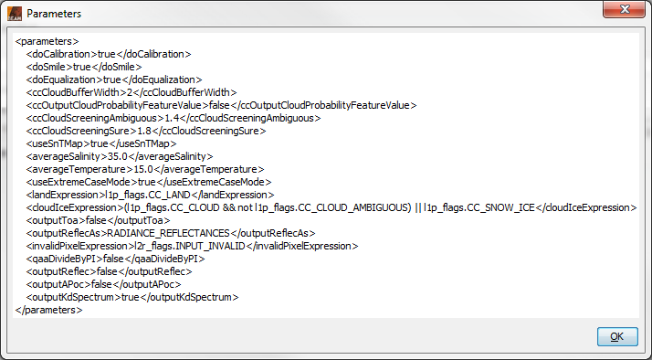
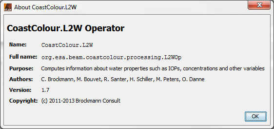
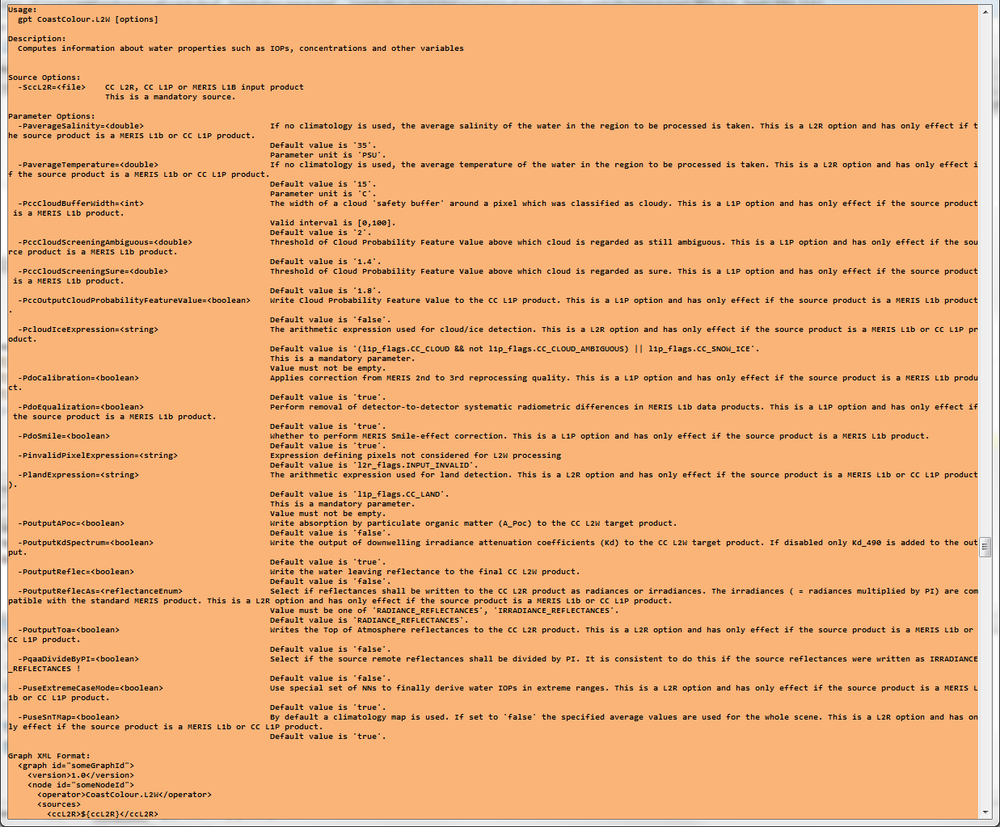

| In-Water Processing |
|
Selecting the CoastColour Processors (MERIS)... entry from the VISAT 'Processing --> Thematic Water Processing' sub-menu opens another sub-menu with the three entries 'Pre-Processing and Pixel Classification...', 'Atmospheric Correction...', and 'In-Water Processing...'. Selecting 'In-Water Processing...' from this sub-menu pops up the 'In-Water Processing' dialog:

CC L2R, CC L1P or MERIS L1B product:
Here the user specifies the CC L2R, CC L1P or the MERIS L1b source product. A 'CC L1P' product is the result product of a previous CoastColour L1P 'Pre-Processing and Pixel Classification' step. A 'CC L1R' product is the result product of a previous CoastColour L2R 'Atmospheric Correction' step. If the source product is a CC L1P product, the L2R 'Atmospheric Correction' step will be automatically carried out internally before the L2W 'In-Water Processing' step. If the source product is a MERIS L1b product, both L1P and L2R processing steps will be automatically carried out internally before the L2W step. However, in these cases, no intermediate CC L1P and CC L2R products, but only an L2W target product will be produced.
The combo box presents a list of all products open in VISAT. The user may select one of these or, by clicking on the button next to the combo box, choose a product from the file system.
Name: Used to specify the name of the target product.
Save to: Used to specify whether the target product should be saved to the file system. The combo box presents a list of file formats, currently BEAM-DIMAP, GeoTIFF, and HDF5.
Open in VISAT: Used to specify whether the target product should be opened in VISAT. When the the target product is not saved, it is opened in VISAT automatically.
Selecting the Processing Parameters tab in the 'In-Water Processing' dialog switches to the following view:

[L1P]...: All options starting with '[L1P]...' have the same meaning as described in the documentation for the L1P 'Pre-Processing and Pixel Classification' processing. These parameters have effect only if an L1P processing step will be performed in advance (i.e. if the source product is neither a CC L1P nor a CC L2R, but a MERIS L1B product).
[L2R]...: All options starting with '[L2R]...' have the same meaning as described in the documentation for the L2R 'Atmospheric Correction' processing. These parameters have effect only if an L2R processing step will be performed in advance (i.e. if the source product is not a CC L2R but a CC L1P or a MERIS L1B product).
Invalid pixel expressions: This is the arithmetic expression used for invalid pixel detection.
Divide source remote reflectances by PI (3.141592): This checkbox indicates if the source remote reflectances shall be divided by PI. It is consistent to do this if the source reflectances were written as irradiances ( = radiances multiplied by PI)!
Write water leaving reflectances to the CC L2W target product: This checkbox indicates if the water leaving reflectances shall be written to the CC L2W target product.
Write A_Poc to the CC L2W target product: This checkbox indicates if the absorption by particulate organic matter (A_Poc) shall be written to the CC L2W target product.
Write Kd spectrum to the CC L2W target product: This checkbox indicates if the output of downwelling irradiance attenuation coefficients (Kd) shall be written to the CC L2W target product.
In addition to the 'l1_flags', 'l1p_flags', and the 'l2r_flags', the CC L2R target product provides another flag band 'l2w_flags' with a coding as shown below:

Selecting the File entry in the Menu Bar opens the following view:

Open Parameters...: When this entry is selected, an 'Open File' dialog will appear. Here, a BEAM GPF parameters XML file can be selected, containing 'In-Water Processing' parameters which were saved earlier. These parameters will be loaded and applied for an upcoming processing.
Save Parameters...: When this entry is selected, a 'Save File' dialog will appear. Here, the current set of 'In-Water Processing' parameters can be saved into a BEAM GPF parameters XML file for later re-usage.
Display Parameters...: When this entry is selected, the current set of 'In-Water Processing' parameters will be displayed in XML format (see below).

Selecting the Help entry in the Menu Bar opens the following view:

Help: When this entry is selected, this online help is opened in a separate window.
About...: When this entry is selected, an 'About' dialog for the current processor is opened (see below).


Run: When this button is clicked, the processing will be started with the selected parameters.
Close: When this button is clicked, the processor tool window will be closed.
